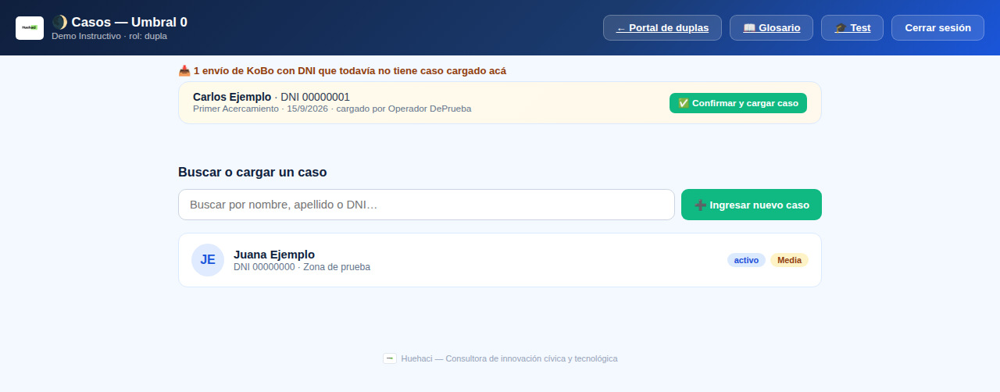
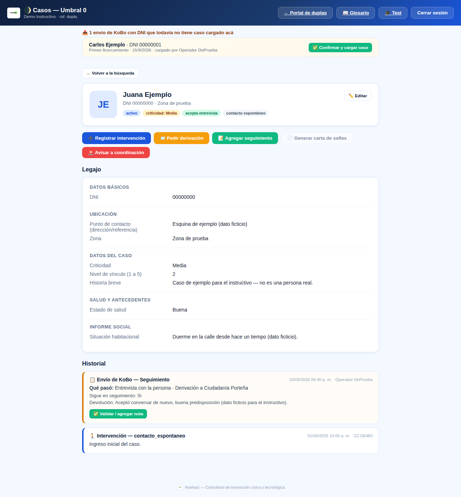
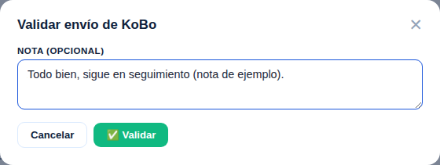
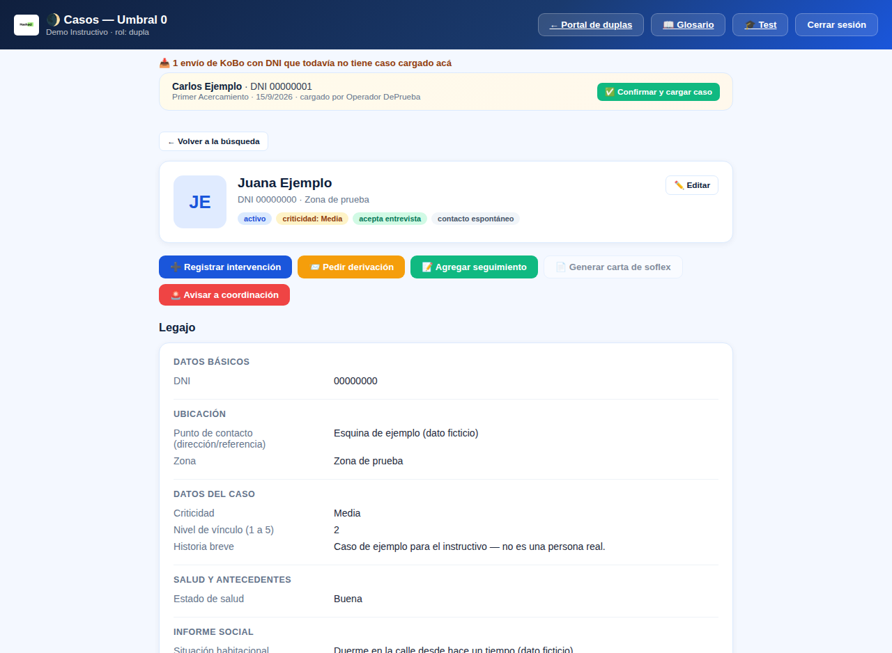
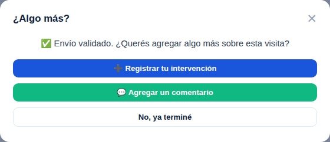

En esta página
¿Qué es Umbral 0?
Umbral Cero busca llegar a las personas en situación de calle con mayor desvinculación de los dispositivos tradicionales — quienes no confían en el sistema, no sostienen los espacios formales, o llegan a ellos de manera intermitente. El eje del equipo no es "captar demanda", sino construir, con presencia reiterada y trato digno, las condiciones para que esa demanda pueda existir con el tiempo.
Sin vínculo no hay política pública efectiva. El equipo de Umbral 0 se integra a la Red como un eslabón inicial: no reemplaza a los dispositivos existentes, trabaja la etapa previa — reduciendo la distancia entre el Estado y quienes quedaron afuera.
Los 5 principios de intervención
Niveles de éxito (1 a 5)
El éxito no es "ingresó a un dispositivo" o no — es el avance del vínculo. Los procesos no son lineales; el objetivo es el monitoreo continuo, no saltar directo al nivel 5.
- Brinda su nombre y DNI
- Acepta ser registrada
- Permite georreferenciar su lugar de permanencia
- Reconoce a los operadores
- Acepta conversar nuevamente
- Acepta una entrevista
- Comienza a compartir información personal
- Registrar cambios e identificar necesidades
- Conocer consumos
- Conocer redes familiares, vinculares y comunitarias
- Identificar problemáticas de salud
Glosario de derivaciones y articulaciones
Tocá cada una para abrirla. Formulario = tiene campos propios y arma un mensaje/PDF listo para copiar. Simple = solo observaciones libres. Urgencia = llamado inmediato.
CIS — Centro de Inclusión SocialFormulario
›
Para quién: demanda espontánea (alguien que pide ingresar sin estar en seguimiento) o para personas ya en seguimiento del equipo.
Requisito clave: foto del DNI o de la denuncia de extravío — obligatoria, no se hacen ingresos sin eso. También sirve si la persona tiene un trámite de DNI en curso (no hace falta esperar a tenerlo en mano).
A quién avisar: al referente territorial, que lo eleva a la supervisión de la RED (demanda espontánea) o completa el Forms de vacante y lo envía al grupo "Derivaciones DIPA" (seguimientos).
Demanda espontánea — canal correcto: las vacantes para demanda espontánea se piden a la Red por Handy Rojo. El 108 no es un canal para esto (el 108 es para familias con niños/niñas/adolescentes — ver "Mapa de Familias en Riesgo"). El traslado a CIS lo hace la camioneta de la RED móvil, estacionada en Perón y Agüero de 7 a 11:30/12 hs y de 14:30 a 19/19:30 hs — ahí esperan las personas con vacante ya asignada.
Si se junta gente pidiendo vacante en un punto del territorio (ej. la puerta de un dispositivo): no conviene derivar en el momento sin más — es población muy crónica y con baja adherencia. Mejor invitarlos a acercarse a Perón y Agüero para pedir la vacante ahí, y usar el contacto para trabajar el vínculo y pensar otras intervenciones más allá del CIS.
Cursos de oficios / inserción laboral: para acceder hay que estar ingresado en un CIS — en la Subsecretaría también hay cupos, pero priorizan a quienes ya están en un CIS.
Cómo pedirla: desde la ficha de la persona, botón "📨 Pedir derivación" → elegí "CIS" — se abre el formulario con los campos que pide justo esta derivación.
Algunas direcciones:
- Costanera — Av. España 2265, Puerto Madero (Comuna 4) · hombres
- La Boca — Av. Don Pedro de Mendoza 1357, La Boca (Comuna 4) · hombres
- Once — Pres. Juan Domingo Perón 2869, Balvanera (Comuna 3) · hombres (PB y 1º piso)
- Garay — Juan de Garay 1450, Constitución (Comuna 1) · hombres
- Bepo Ghezzi — Herminio Masantonio 2970, Nueva Pompeya (Comuna 4) · hombres
- Castañares — Castañares 1653, Parque Chacabuco (Comuna 7) · adultos mayores y discapacidad
Ver más CIS
- 7 de mayo — Almirante Brown 1127, La Boca (Comuna 4) · hombres
- América — Bernardo de Irigoyen 1608, Constitución (Comuna 1) · familias
- Brasil — Brasil 1334, Constitución (Comuna 1) · hombres
- Carlos Calvo — Carlos Calvo 1231, Constitución (Comuna 1) · familias
- Casa Blanca — Santiago del Estero 1687, Constitución (Comuna 1) · hombres
- El Arca — San Pedro 1217, Villa Lynch · hombres
- El Faro — Av. Riestra 5956, Lugano (Comuna 8) · familias
- Entre Ríos — Av. Entre Ríos 1742 (entre Brasil y Antequera), Constitución (Comuna 1) · mujeres y diversidades
- Floresta - Karakachof — Av. Mariano Acosta 140, Floresta (Comuna 10) · hombres
- Azucena Villaflor — Piedras 1583, San Telmo (Comuna 1) · mujeres con niños/as
- Félix Lora — Av. Paseo Colón 811, San Telmo (Comuna 1) · hombres
- 26 de julio — Av. Belgrano 482, San Telmo (Comuna 1) · mujeres con niños/as
- Loria Módulos — Cochabamba 3270, San Cristóbal (Comuna 3) · familias
- Parque Chacabuco — Asamblea 1301, Parque Chacabuco (Comuna 7) · hombres
- Hortiguera — Hortiguera 1861, Parque Chacabuco (Comuna 7) · mujeres y diversidades
- Ituzaingó — Coronel Ventura Alegre 750, Ituzaingó · hombres
- Julieta Lanteri — Tacuarí 1670, San Telmo (Comuna 1) · hombres, salud mental
- Lima — Lima 477, Montserrat (Comuna 1) · hombres con consumo problemático
- Martina Chapanay — Domingo Cabred 4708 esq. Falucho, Pompeya (Comuna 4) · mujeres y diversidades
- Mataderos — Larrazábal 1680, Mataderos (Comuna 9) · adultos mayores
- Nuevos Rumbos — Pi y Margall 1145 esq. Hernandarias, La Boca (Comuna 4) · familias
- Retiro — Av. Gendarmería Nacional 522, Retiro (Comuna 1) · hombres
- Rivadavia — Av. Rivadavia 3113, Balvanera (Comuna 3) · hombres
- Rosedal — Santiago del Estero 1685, Constitución (Comuna 1) · adultos mayores, mixto
- San Camilo — Paz Soldán 4924, Paternal (Comuna 15) · hombres
- Tacuarí — Tacuarí 1523, San Telmo (Comuna 1) · hombres
- Urquiza 250 — Gral. Urquiza 250, Balvanera (Comuna 3) · hombres
- Urquiza 264 — Gral. Urquiza 264, Balvanera (Comuna 3) · familias
- Vientos — Concepción Arenal 4819, Chacarita (Comuna 15) · hombres
- Zabala — Zabala 3444, Colegiales (Comuna 13) · mujeres
Handy RojoSimple
›
Para qué: es el canal para pedirle vacantes de CIS a la Red cuando es demanda espontánea. También sirve para pedir acceso puntual a ducha y comida (sin alojarse) para alguien que ya tiene la denuncia de extravío hecha pero no quiere ir a un parador.
Ojo: el 108 no reemplaza al Handy Rojo — el 108 es específicamente para familias con niños, niñas y/o adolescentes (ver "Mapa de Familias en Riesgo"), no para vacantes de CIS ni gestiones de DNI de personas adultas.
Casa VincularFormulario
›
Para quién: solo personas en seguimiento. Para quienes no quieren ir a un CIS, tuvieron egresos negativos, o son perfiles de "alta criticidad" (consumo, larga permanencia en calle).
Cómo: se arma un informe social completo (situación habitacional, económica, sanitaria, redes, educativa). Siempre aclarar a la persona que el pernocte no está garantizado — primero se accede al espacio diurno.
A quién avisar: a la coordinación de Umbral Cero, que lo deriva al grupo de las Casas Vinculares (Dorrego, Panambi, Fray Cayetano, Sin Barreras).
Qué casa según el perfil:
- Casa Dorrego — hombres, +18 años
- Casa Panambí — mujeres y disidencias, +18 años, que atraviesan procesos de consumo problemático
- Casa Fray Cayetano — hombres de 40 años en adelante que no sostengan sus estadías en CIS y necesiten trabajar hábitos
- Casa Sin Barreras — hombres +18 años con discapacidad, que deban abordar esas mismas problemáticas
Cómo pedirla: desde la ficha de la persona, botón "📨 Pedir derivación" → elegí "Casa Vincular" — se abre el formulario con los campos que pide justo esta derivación.
ASA — ex Centro de Admisión, Evaluación y DerivaciónFormulario
›
Para quién: personas en seguimiento que atraviesan consumo problemático y ya dialogaron con el equipo sobre esa problemática, de cara a evaluar una comunidad terapéutica.
Cómo: mismo informe social que Casa Vincular.
A quién avisar: al referente territorial, que lo viabiliza con la coordinación de Umbral Cero.
Cómo pedirla: desde la ficha de la persona, botón "📨 Pedir derivación" → elegí "ASA" — se abre el formulario con los campos que pide justo esta derivación.
MicroFormulario
›
Para quién: equipos de turno vespertino, para que la persona empiece a sostener el espacio y genere rutina.
Requisito clave: la persona no puede tener signos de consumo activo al momento del ingreso — el encuadre es más flexible que un CIS, pero no tanto. Siempre requiere DNI o denuncia de extravío.
Dirección y horario de los micros: Perón y Agüero, 22hs. Belgrano — horario a confirmar.
A quién avisar: a la coordinación de Umbral Cero, que articula con la coordinación de micros.
Cómo pedirla: desde la ficha de la persona, botón "📨 Pedir derivación" → elegí "Micro" — se abre el formulario con los campos que pide justo esta derivación.
Salud MentalFormulario
›
Para quién: personas con indicadores de alguna problemática de salud mental.
Cómo: se evalúa orientación en tiempo/espacio (¿qué día es? ¿en qué año estamos? ¿se acuerda bien su nombre? ¿vestimenta acorde al clima? ¿conductas de riesgo?).
Cuándo llamar al SAME: si la persona no está ubicada en tiempo/espacio (no sabe qué día o año es, no recuerda bien su nombre) y además presenta malestar físico (se marea, refiere sentirse mal, etc.), se llama al SAME de inmediato — necesita que la evalúe un médico. No se la aborda ni se la sube a un móvil sin esa evaluación previa. También se llama si hay riesgo para sí o terceros. El equipo permanece en el lugar hasta que llegue el SAME.
A quién avisar: al grupo de WhatsApp con el área de Salud Mental (nombre, DNI, fecha de nacimiento, edad, vestimenta y punto de contacto) — y avisar también a Ilanit o Agustina Ramos.
Cómo pedirla: desde la ficha de la persona, botón "📨 Pedir derivación" → elegí "Salud Mental" — se abre el formulario con los campos que pide justo esta derivación.
Circuito completo: cargás el KoBo en el momento → validás el caso en esta plataforma → desde la ficha tocás "📨 Pedir derivación" → elegís "Salud Mental" → completás el formulario → se envía el mensaje al referente → el referente lo envía a la coordinación de Umbral 0.
SAMEUrgencia
›
Para quién: cualquier persona que necesite atención médica urgente (no hace falta que sea vía Salud Mental).
Cómo: llamar al 107. Pedir el número de operador que recepciona. Si la persona rechaza la atención verbalmente, igual se llama. Al llegar: registrar médico, matrícula, institución, móvil, patente y hospital de traslado si corresponde.
Brigada CERFormulario
›
Para quién: asistencia sanitaria o evaluación física de campo — para decidir si hace falta llamar al SAME, o como apoyo cuando el SAME ya fue solicitado y demora.
A quién avisar: se llama por teléfono directo a la coordinación territorial de Brigada CER.
Cómo pedirla: desde la ficha de la persona, botón "📨 Pedir derivación" → elegí "Brigada CER" — se abre el formulario con los campos que pide justo esta derivación.
Mapa de Familias en RiesgoUrgencia
›
Para quién: grupos familiares en calle con niños, niñas y/o adolescentes.
Protocolo urgente según lo que encuentres:
· Menores solos/as (sin adultos) en situación de calle: llamar de inmediato al SAME (107) y a la Policía, y contactar la Línea 102 — minoridad.
· Familia con menores: contactar la Línea 108.
A quién avisar: a la referencia territorial, que se comunica con la coordinación de Mapa de Familias en Riesgo.
Policía de la CiudadUrgencia
›
Para quién: situaciones violentas, amenazas o comportamientos que requieran intervención policial (peleas, daño a la vía pública o a inmuebles privados).
Cómo: llamar al 911. Si el equipo aguarda al móvil, registrar nombre y apellido del personal, LP (legajo personal), comisaría y N° de móvil.
Programa Ciudadanía PorteñaFormulario
›
Requisitos: DNI con domicilio en CABA + negativa de ANSES. Si el DNI tiene menos de 2 años de emisión, hace falta además un informe social de otra institución.
Cómo: acompañamiento por el equipo, o derivación si la persona puede ir por sus propios medios. El "formulario integral" lo recibe el referente territorial (lo hace llegar al Área de Demanda Externa, Jerónimo Salguero 979); la derivación en papel se le entrega directo a la persona.
Cómo pedirla: desde la ficha de la persona, botón "📨 Pedir derivación" → elegí "Programa Ciudadanía Porteña" — se abre el formulario con los campos que pide justo esta derivación.
Sedes de Atención SocialSimple
›
Para quién: abordaje integral por comuna — consumo problemático, derecho a la identidad, derecho de la mujer, discapacidad, asistencia social a NNyA/familias/personas mayores. Incluye gestión de DNI con eximición de pago y asesoramiento sobre el Certificado Único de Discapacidad.
Derecho a la IdentidadSimple
›
Para quién: personas sin inscripción registral (NN) o extranjeras con dificultades de documentación. Asesoramiento, derivación asistida y seguimiento social en la tramitación del DNI, a través de un equipo interdisciplinario. Sito en Rodríguez Peña 780.
DIPA — Dispositivo de Primer AcercamientoSimple
›
Qué es: espacio de 06:00 a 22:00 hs con asistencia alimentaria (desayuno y merienda), gestión de Ciudadanía Porteña y del Programa de Apoyo para Familias en Situación de Vulnerabilidad Habitacional. También el lugar donde se espera mientras se gestiona un ingreso a CIS.
Dónde:
- Combate de los Pozos 1280 — solo tiene duchas
- Zabala 4070
MédicoSimple
›
Cómo: turnos por la línea 147 para acompañar a la persona al sistema de salud. Si se acompaña, dialogar con el servicio social de la institución para que conozcan la situación.
TuberculosisSimple
›
Sin constancia de tratamiento ni medicación: indicarle que se acerque a la institución de salud más cercana. Si no puede hacerlo por el estado en el que se encuentra, se llama al SAME. Siempre recomendamos el Hospital Muñiz, que se especializa en enfermedades infectocontagiosas.
Con constancia de tratamiento: tiene que dejar en claro que no está en período de contagio, con el alta correspondiente. Si tiene esa constancia, puede pedir vacante en CIS con normalidad.
Hacer DNISimple
›
Cómo: derivación con eximición de pago + acompañamiento a hacer el trámite, o la denuncia de extravío en la comisaría más cercana si corresponde.
Centro de díaSimple
›
Sin detalle adicional todavía en el documento institucional — formulario simple hasta que se defina más.
No encontramos ninguna derivación con ese texto.
Cómo usar Casos: carga, validación y seguimiento
El KoBo es obligatorio en cada contacto — pero eso NO significa que después haya que volver a escribir todo de nuevo en la plataforma. La idea es: cargás el KoBo en el momento, y acá confirmás/completás lo que haga falta.





¿Por qué a veces no aparece el envío de KoBo en la ficha?
▸
Casi siempre es porque el KoBo quedó sin DNI (o con un DNI distinto al que ya tenía cargado la persona) y el nombre tampoco matcheó exacto con el caso — en ese caso no hay forma segura de asociarlo solo. Si ves que falta, revisá si la sección "¿es la misma persona?" de KoBo pendientes lo tiene esperando tu confirmación.
¿Qué pasa si valido un envío por error?
▸
Podés volver a tocar el botón (ahora dice "✏️ Editar nota") y corregir o borrar la nota cuando quieras — validar no es un paso irreversible, es solo una confirmación.
¿Tengo que seguir usando "Registrar intervención" para todo?
▸
No para lo que ya está en el KoBo — eso se valida, no se vuelve a cargar. Usalo para lo que pasa fuera de un envío de KoBo: un llamado telefónico, algo que surge después, o cualquier contacto que no quedó registrado ahí.
Me olvidé de cargar un dato en un caso que ya existe — ¿qué hago?
▸
Nunca uses "➕ Ingresar nuevo caso" para eso — crea un caso nuevo y separado, con su propio historial, y el caso original queda igual de incompleto. Usá "🔍 Buscar" (por nombre o DNI), abrí la ficha de la persona y tocá "✏️ Editar" para completar lo que faltaba. Si por las dudas intentás dar de alta un DNI que ya tiene caso cargado, la plataforma te va a mostrar un aviso antes de guardar, mostrándote quién ya lo cargó y cuándo.
Herramientas de registro
Esta plataforma (Casos) es donde se registra cada intervención, derivación y seguimiento — reemplaza la planilla manual para el día a día del equipo.
Grupo de WhatsApp del equipo territorial — para despejar dudas y gestionar estrategias de abordaje con la referencia de GOPA.
Referente territorial — nuestro nexo institucional con el resto de la Red. No coordina al equipo puertas adentro, pero es a quien avisamos y quien deriva la mayoría de las articulaciones de este glosario.